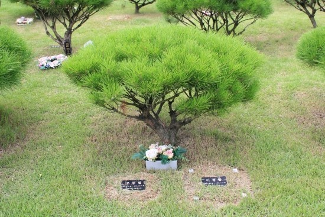
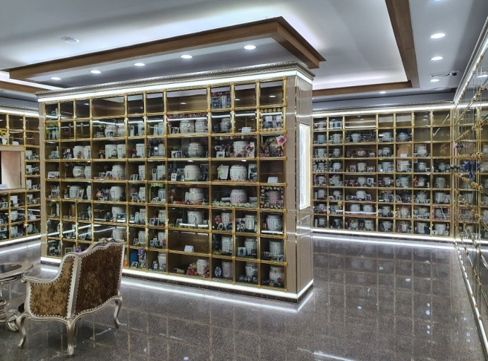
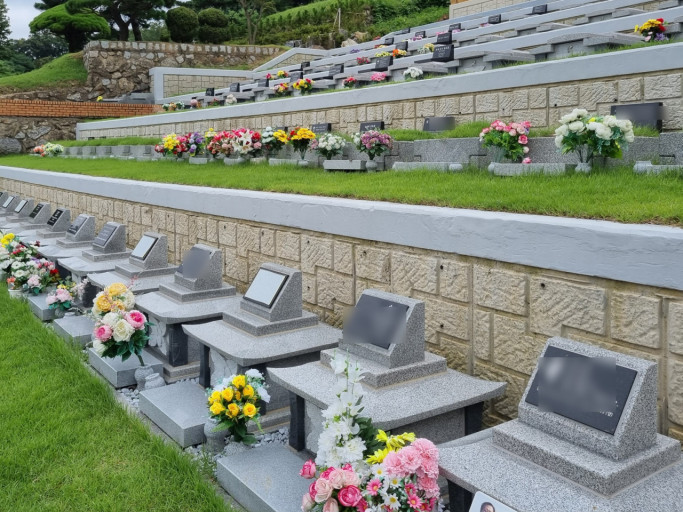

<?
include("include/head.php");
?>
  <!--step s-->
  <div id="normal">

    <div class="stepper_wrapper">
       
      <div class="stepper_item completed">
        <div class="step_counter"><span class="material-symbols-outlined">done</span></div>
        <div class="step_name">기증 신청</div>
      </div>
      <div class="stepper_item completed">
        <div class="step_counter"><span class="material-symbols-outlined">done</span></div>
        <div class="step_name">수의</div>
      </div>
      <div class="stepper_item completed">
        <div class="step_counter"><span class="material-symbols-outlined">done</span></div>
        <div class="step_name">염습</div>
      </div>
      <div class="stepper_item active">
        <div class="step_counter">6</div>
        <div class="step_name">화장/매장</div>
      </div>
      <div class="stepper_item">
        <div class="step_counter">7</div>
        <div class="step_name">유언</div>
      </div>
    </div>
  </div>
   <!--step e-->
        <!--content s-->
        <div class="container pb-0">
             
            <div class="d-flex flex-column px-4 pt-3 vh-100  "> 
                <div class="d-flex justify-content-between align-items-center pb-4">
                    <h2 >화장과 매장 중 어떤 것을 원하세요?</h2>
                    <button type="button" class="btn btn-link cl_disabled" data-bs-toggle="modal" data-bs-target="#infomodal1">
                        <span class="material-symbols-outlined">
                            info
                            </span>
                      </button>
                </div>
                <div class="d-flex gap-3 flex-column">
                    <input type="radio" class="btn-check" name="options" id="option15" autocomplete="off">
                    <label class="btn btn-primary-toggle btn-lg w-100" for="option15">화장을 원해요</label>

                    <input type="radio" class="btn-check" name="options" id="option16" autocomplete="off" >
                    <label class="btn btn-primary-toggle btn-lg w-100" for="option16">매장을 원해요</label> 
 
                </div>
                <div class="d-flex justify-content-between align-items-center pt-40 pb-4">
                    <h2>장지를 정하셨나요?</h2>
                    <button type="button" class="btn btn-link cl_disabled" data-bs-toggle="modal" data-bs-target="#infomodal2">
                        <span class="material-symbols-outlined">
                            info
                            </span>
                      </button>
                </div>
                <div class="img_toggle">
                    <input type="radio" class="btn-check" name="options2" id="option17" autocomplete="off">
                    <label class="btn btn-primary-toggle btn-lg w-50" for="option17">
                        
                        수목장 (화장)</label>
                        <input type="radio" class="btn-check" name="options2" id="option18" autocomplete="off">
                    <label class="btn btn-primary-toggle btn-lg w-50" for="option18">
                        
                        봉안당 (화장)</label>
                        <input type="radio" class="btn-check" name="options2" id="option19" autocomplete="off">
                    <label class="btn btn-primary-toggle btn-lg w-50" for="option19">
                        
                        봉안담 (화장)</label>
                        <input type="radio" class="btn-check" name="options2" id="option20" autocomplete="off">
                    <label class="btn btn-primary-toggle btn-lg w-50" for="option20">
                        
                        묘 (매장)</label> 
 
                </div>
                <div class="fixed_bottom bg-white px-3 py-3 d-flex gap-3">
                    <button type="button" class="btn btn-lg w-50 btn-gray"
                        onclick="location.href='write_5.html'">
                        이전</button>
                        <button type="button" class="btn btn-lg w-50 btn-primary"
                        onclick="location.href='write_7.html'">
                        다음</button>
                </div>
            </div> 

        </div>


        <!-- info Modal -->
<div class="modal fade" id="infomodal1" tabindex="-1" aria-labelledby="infomodal1label" aria-hidden="true">
    <div class="modal-dialog modal-dialog-centered">
      <div class="modal-content">
        <div class="modal-header text-start">
          <div class="subtitle2 cl_description " id="infomodal1label"><span class="material-symbols-outlined me-2">
            info
            </span>화장,매장 어떤 차이 인가요?</div>
          <button type="button" class="btn-close" data-bs-dismiss="modal" aria-label="Close"></button>
        </div>
        <div class="modal-body caption2 cl_info pb-4">
            * 거주지 화장의 경우, <br>거주민(6개월 이상 거주)의 경우에는 <br>평균 5~10만원의 화장 비용이 발생합니다.<br>
            * 매장의 경우,<br>이미 선산이 있는 경우 등의 상황에 따라 가격이 달라집니다. <br>(매장 비용은 대부분 묘지 공사비용이며 평균 700만원 이상 책정됩니다.)
        </div>
         
      </div>
    </div>
  </div>
        <!-- info Modal 2-->
        <div class="modal fade" id="infomodal2" tabindex="-1" aria-labelledby="infomodal2label" aria-hidden="true">
            <div class="modal-dialog modal-dialog-centered">
              <div class="modal-content">
                <div class="modal-header text-start">
                  <div class="subtitle2 cl_description " id="infomodal2label"><span class="material-symbols-outlined me-2">
                    info
                    </span>장지는 무엇인가요?</div>
                  <button type="button" class="btn-close" data-bs-dismiss="modal" aria-label="Close"></button>
                </div>
                <div class="modal-body caption2 cl_info pb-4">
                    장지란, 고인을 화장 또는 매장한 뒤 모시는 곳 입니다.<br>
                    장례 이후에 가족들이 찾아오기 편리한 위치나 <br>가격을 고려해서 결정하시면 됩니다.<br>장지에 따라 가격이 다를 수 있으므로 <br>미리 알아보는 것을 추천합니다. 
                </div>
                 
              </div>
            </div>
          </div>

        <!--content e-->
        <?
        include("include/footer.php");
        ?>